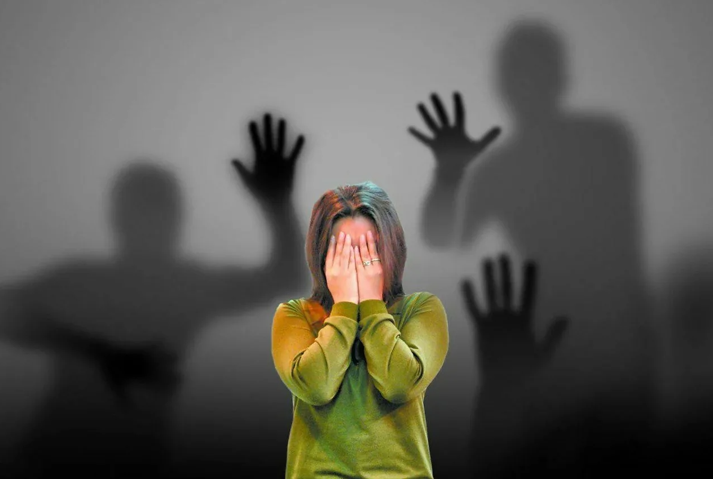
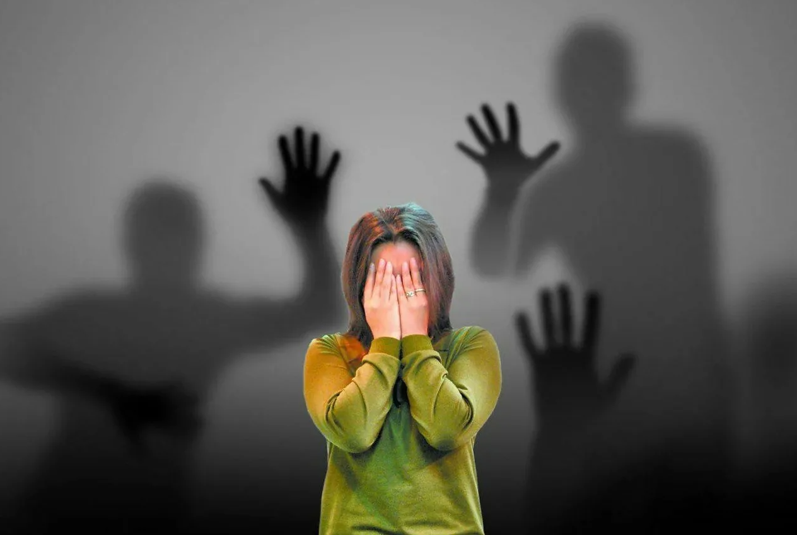
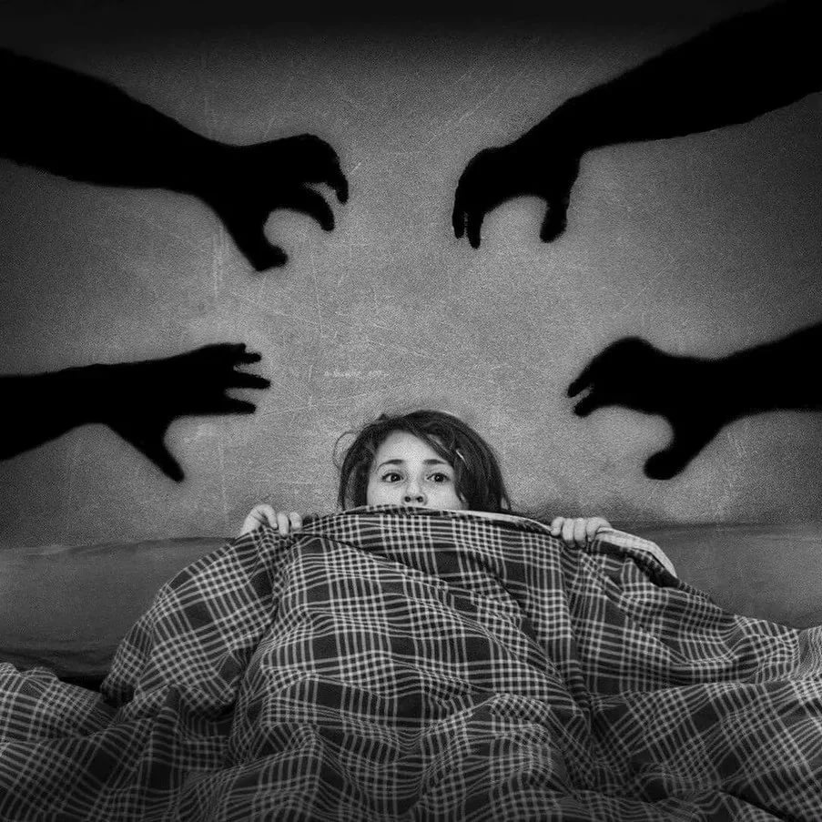

Доктор Мирон

Доктор Мирон

Фобия
Фобия (от греч. phуbos — страх) —навязчивые неадекватные переживания страхов конкретного содержания, охватывающих субъекта в определенной (фобической) обстановке и сопровождающихся вегетативными дисфункциями.
Специфические фобии — это боязнь перед конкретными объектами. Чаще всего такими объектами становятся различные насекомые, пауки, змеи, животные или отдельные люди. Но не всегда специфические фобии могут каcаться только объектов: это может быть и некоторое действие или явление, связанное и риском для здоровья или жизни.
Страхи как одна из форм тревожного расстройства появляются очень рано, в детском возрасте. Чтобы с уверенностью классифицировать фобию как специфическую, нужно проследить несколько характерных признаков. Первая — это частота проявления: если человек каждый день избегает объекта фобии или его присутствие приносит некоторое страдание. Вторая — необоснованность: нет явных причин для страха перед объектом, действием или явлением.
Причин возникновения специфических фобий много. В большинстве случаев имеет место некая стрессовая ситуация в детстве, которая повлияла на дальнейшее представление человека об объекте или явлении. Но конкретно определенных факторов, провоцирующих страхи, не существует. В корне проблемы могут быть семейные истоки, культурные, связанные с неприятными событиями.
